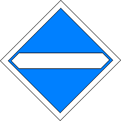

(1) Bedeutung
Bügel ab.
Signalbuch-Online
Signal El 4 – „Bügel ab“-Signal
Informationen, Bedeutung und Aufstellung des Signals El 4 nach der Eisenbahn-Signalordnung.
(2) Beschreibung
Ein waagerecht weißer Streifen.
Das Signal als Grafik:

(3) Anwendung
Das Signal kennzeichnet den Beginn eines Gleisabschnitts, der nur mit gesenktem Stromabnehmer befahren werden darf.
(4) Ausführung
Am Signal müssen die Stromabnehmer völlig gesenkt sein.
(5) Aufstellung
Das Signal befindet sich 30 m vor dem mit gesenkten Stromabnehmern zu befahrenden Fahrleitungs-Abschnitt.
(6) Originalbilder
Originalaufnahme des Signals El 4